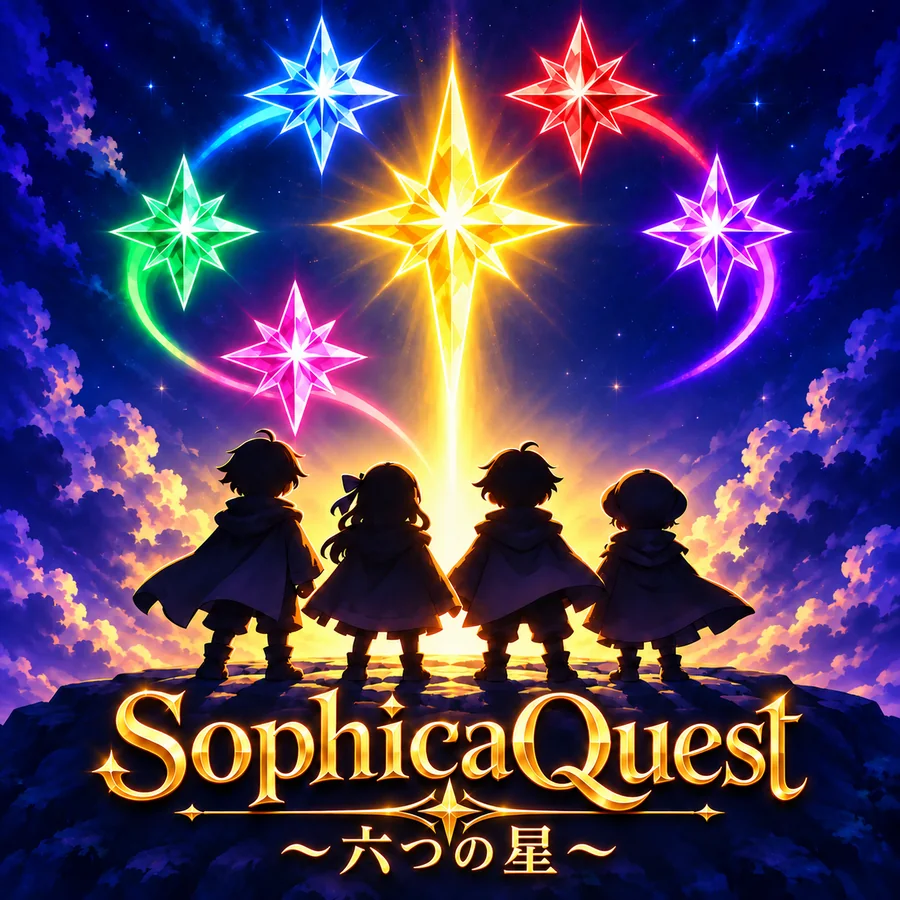
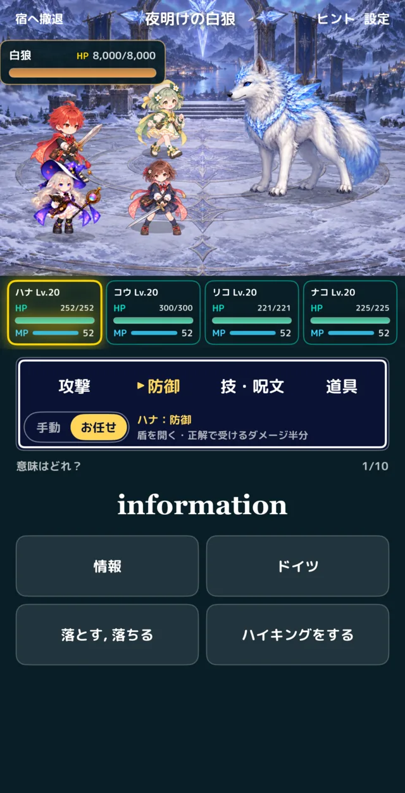
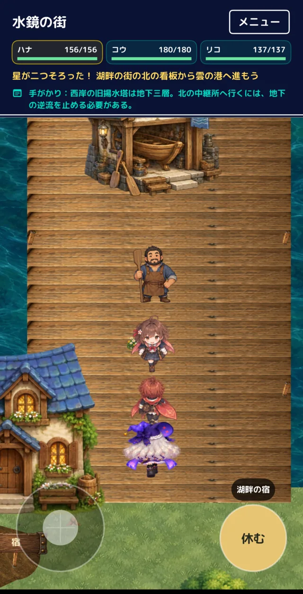
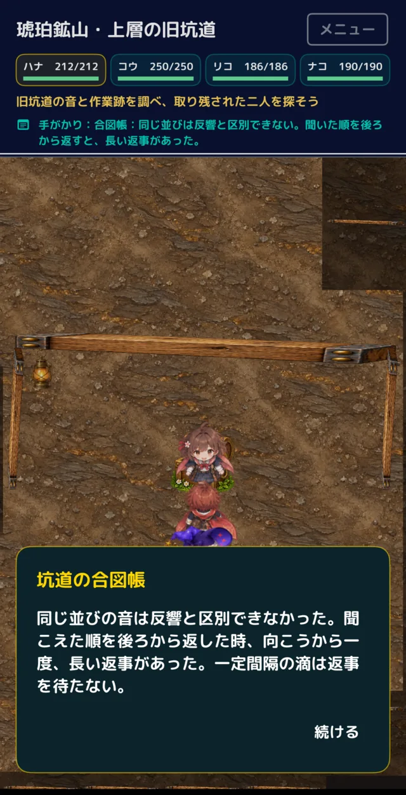
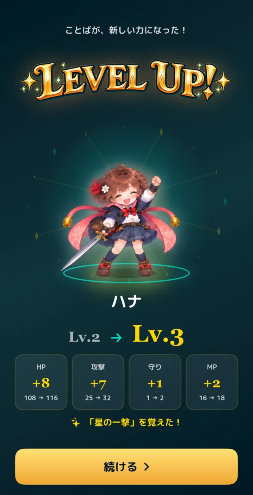
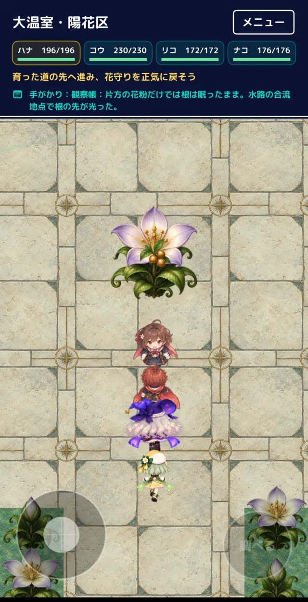
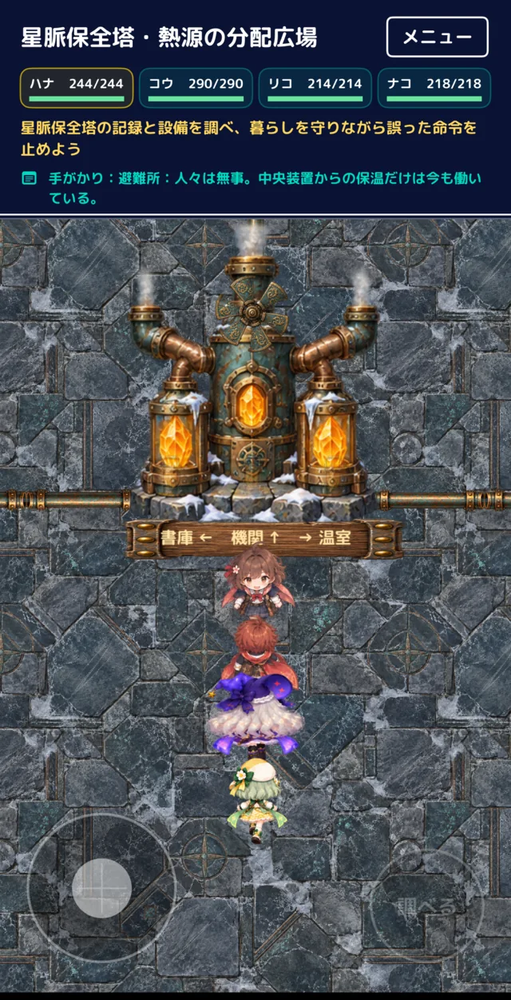

中学・初級前編
小学校で習う単語から、中2の前半くらいまで
1,069単語
249熟語
- 最初のステージ
- havelikegood
- 後半のステージ
- informationhealth
SophicaQuest
ソフィカクエスト
英単語 × 冒険RPG
英単語の意味を答えて仲間と戦い、六つの星を集める冒険RPG。遊んでいるうちに、中学・高校の英単語と熟語が身につきます。
App Storeで「SophicaQuest」と検索しても見つかります。

英単語を答えるたびに、冒険が進みます。






うちの息子と娘は、単語帳を覚える作業がどうしても苦手でした。というより、好きではありませんでした。「ゲームなら続けられるかもしれない」と思って作ったのが、このSophicaQuestです。
もともとはわが家のために作ったものですが、同じように単語帳が苦手な人にも遊んでもらえたらと思い、公開しました。お裾分けです。
高校物理のYouTubeチャンネル「たのしいぶつり」
元高校教師
冒険を始めるときに、自分に合った単語帳を選びます。どちらも無料です。
小学校で習う単語から、中2の前半くらいまで
高校に入って最初に固めたい単語
熟語は高1の基礎レベルです。
中学の単語に自信がない高校生は、中学のほうから始めるのもおすすめです。冒険データは3つあり、それぞれで単語帳を選べます。
星灯りの森から雪星の村まで、6つのステージを旅します。
英単語が出たら、4つの中から意味を選びます。熟語は、英文の空欄に入る語を選びます。
正解すると仲間全員で攻撃。答えるほどレベルが上がり、新しい技や呪文を覚えます。
間違えた単語は、時間をおいて何度も出てきます。発音は読み上げで確かめられます。
遊びすぎず、続けやすいように作りました。
その日の冒険は30分で区切りがつきます。会話や戦闘の途中で急に終わることはありません。
きょうだいで1台のiPhoneを使っても、それぞれの冒険を続けられます。
メニューの保護者欄で、取り組んだ単語の数や定着した数を確認でき、その日の学びを画像で送れます。
冒険はご自身のiCloudにも保存されるので、新しいiPhoneやアプリの入れ直しのあとも続けられます。
無料で遊べます。広告はありません。
※今後、続きの単語帳をアプリ内課金で追加する予定です。
iPhone向けのアプリです（iOS 26以上）。
SophicaQuestに関するご質問・不具合のご報告は、下記までお寄せください。
SophicaQuestで、今日から冒険を始めましょう。
無料・iPhone向け。App Storeで「SophicaQuest」と検索しても見つかります。